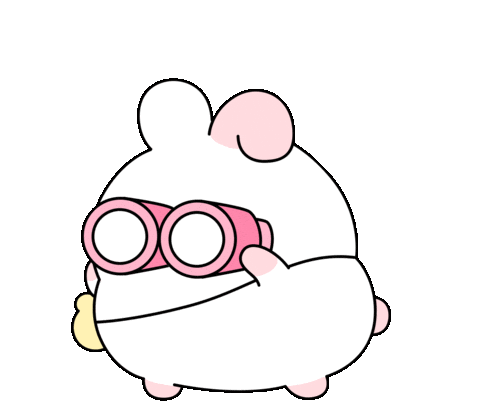

Hello, I am Fariha!
Summary
I'm a Master's student in Computer Science at the University of Lethbridge, specializing in IoT security and cryptography. My research focuses on modular polynomial multipliers in Galois fields, with a broader interest in lightweight cryptographic solutions for embedded systems. Alongside my academic work, I enjoy frontend development—building responsive, user-friendly web apps with tools like React and JavaScript. I'm passionate about combining strong technical foundations with creative problem-solving.
🔐 Focus: IoT Security, Cryptography
💻 Tools: React, JavaScript, Verilog, SQL
🌟 Open to roles in: Frontend Dev, Software Engineering, or Tech Support
Always happy to connect and chat about tech or new opportunities!
Contact Me on LinkedIn
Send Email
Education
Bachelor of Science in Computer Science || May 2020 - May 2023
Master of Science in Computer Science || September 2023 - August 2025
Work Experience
- Web Developer:
- Maintained and updated the website on regular basis.
- Learned how to handle WordPress websites and work with plugins.
- Created and organize forums.
- Software Developer:
- Worked on React Native to build the social media app from scratch.
- Collarbated with frontend and backend team.
- Designed user interfaces on Figma.
- Graduate Assistant:
- Graded and marked assignments of undergraduate courses.
- Provide support through email and meetings for the doubts of the students.
Skills
- HTML
- CSS
- JavaScript
- Verilog
- C
- React
- LLMs
Click on the image to find about my hobbies!!

Find me?
